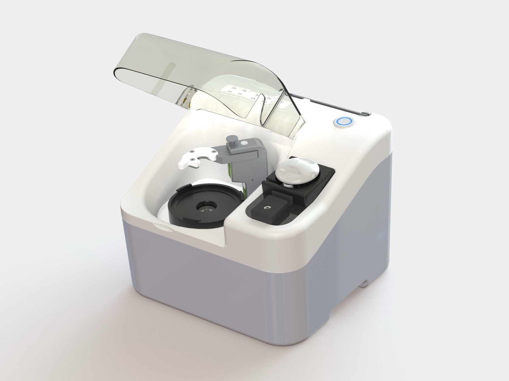

MR Solution 자가 BaM 농축 시스템 Rhea와 Phoenix
한눈에 비교하기
처리량과 수집 방식이 다릅니다. 기관의 시술 방식에 맞는 장비를 고르세요.

Rhea
한 번의 버튼으로 BaM을 백에 수집
- 처리 전혈
- 80 ml 이상
- 수집량
- 10-18 ml BaM
- 전체 처리 시간
- 5 분
- 조작
- 원버튼
Phoenix
프로토콜을 골라 PRP와 PPP를 주사기에 동시 수집
- 처리 전혈
- 60 / 80 ml
- 수집량
- 3 / 6 ml PRP + PPP
- 전체 처리 시간
- 6 분 이내
- 조작
- 터치스크린
수치는 제조사 카탈로그와 사용 설명서 기준입니다.
제품 상세
Autologous Bio-active Molecules Enrich System
전혈에서 BaM까지, 5분
최신 혈액 원심분리 기술을 적용한 완전 자동화 시스템으로, 소프트웨어와 광학 센서가 공정을 제어합니다. 80ml 전혈에서 5분 안에 약 10-18ml의 BaM을 수집합니다.
- 전혈80 ml
- 레이섬 볼 원심분리1000-6000 RPM
- BaM 수집10-18 ml

처리
- 처리 전혈
- 최소 80 ml
- 수집량
- 10-18 ml
- 원심분리
- 1000-6000 RPM (±2%)
- BaM 형태
- 젤, 점안, 주사, 스프레이
장비
- 모델
- ABM2
- 조작
- 원버튼 (All-in-one button)
- 치수
- W 28 × D 25 × H 23 cm
- 중량
- 최대 6 kg
Phoenix Autologous BaM Enrich System
프로토콜을 고르면, 6분 안에
원클릭 자동화 시스템으로, 고농축 PRP와 PPP를 자동으로 동시에 추출합니다. 원심분리 후 혈소판 밀도가 가장 높은 버피코트 층을 정밀하게 수집합니다.
작동 원리
채혈
전혈 60ml 또는 80ml를 항응고제가 든 혈액백이나 주사기에 담습니다.
프로토콜 선택
화면에서 프로토콜 A(PRP 3ml) 또는 B(PRP 6ml)를 고릅니다.
장착
화면 안내에 따라 일회용 키트, 주사기, 혈액백을 장착합니다.
혈액 주입
시작을 누르면 펌프가 혈액을 원심분리 보울로 보냅니다.
원심분리
레이섬 볼 시스템으로 6,500 RPM에서 약 3분간 원심분리합니다.
PRP와 PPP 수집
펌프가 PRP와 PPP를 주사기 2개에 나눠 담습니다.
4-6단계는 장비가 자동으로 진행합니다.
처리
- 처리 전혈
- 60 ml / 80 ml
- PRP 수집량
- 3 ml (A) / 6 ml (B)
- PPP 수집량
- 10-20 ml (Hct에 따라)
- 원심분리
- 6,500 RPM, 약 3분
장비
- 조작
- 터치스크린, 원클릭
- 의료기기 등급
- Class II (제조사 소개 자료 기준)
- 치수
- 사양 확정 예정
- 중량
- 사양 확정 예정